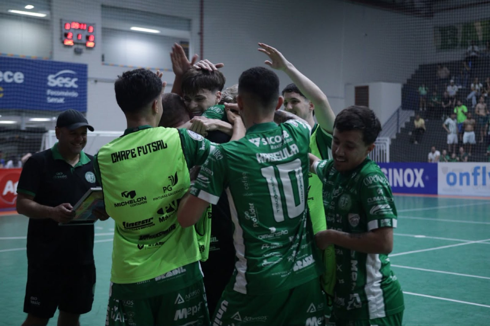

A Prefeitura de Chapecó/Chapecoense/Unochapecó conquistou importante vitória na noite deste sábado (3) e confirmou a classificação às quartas de final do Campeonato Brasileiro de Futsal. Jogando como mandante, no ginásio do SESC, o Verdão das Quadras derrotou o Magé (RJ) por 4 a 1, pela penúltima rodada (8ª) da primeira fase.
Domínio absoluto da Chape Futsal no primeiro tempo. Empurrado pela torcida e depois de tanto insistir, o time da casa conseguiu abrir o placar aos 7’48”. Em lance de contra-ataque, Nogueira passou por dois marcadores e soltou a bomba no ângulo. A pressão resultou no segundo gol aos 10’40”. Lucas foi acionado por João Camilo e, dentro da área, concluiu de letra.
A equipe fluminense descontou em uma das poucas jogadas criadas. Aos 16’42”, Ezequiel mandou de voleio após passe na diagonal. Porém, bastaram 17 segundos para os anfitriões voltarem a movimentar o marcador. Aos 16’59”, Alê Falcone lançou com o pé para Samuka, que, quase da marca de escanteio, dominou no peito e bateu entre o goleiro e a trave, rasteiro: 3 a 1.

A segunda etapa continuou intensa, mas a rede só balançou novamente aos 16’31”. A Chapecoense roubou a bola e Kassula saiu na cara do gol, driblou o arqueiro e rolou a para ampliar a vantagem. O Magé apostou no goleiro-linha, mas o resultado não mudou. Com o triunfo, a Chape Futsal foi a 12 pontos, saltou do sétimo para o quinto lugar e confirmou presença no mata-mata.
Agora, o Verdão das Quadras enfrentará no Brasileiro o Fazenda (PR), vice-líder com 15 pontos, no dia 10 de outubro, às 19h, novamente no SESC. O time do técnico Leo Schroeder tentará vencer para ter chances de ficar entre os quatro melhores e decidir a eliminatória em casa. Antes, a equipe do Oeste catarinense visitará o Pouso Redondo, nesta quarta (7), às 19h30, pela rodada final da primeira fase da Série Ouro do Estadual.
Fotos: Roger Silva/Chape Futsal